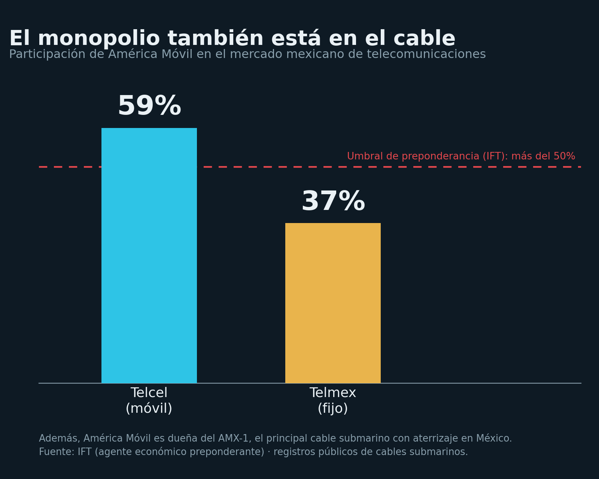

La nube tiene dueño
El internet no vive en 'la nube': entre 95 y 99% del tráfico intercontinental viaja por cables de fibra óptica en el fondo del mar, no por satélites, según TeleGeography. Esa infraestructura es material y tiene dueño. En México, el principal cable submarino, el AMX-1, es propiedad de América Móvil (Carlos Slim), el mismo grupo declarado agente económico preponderante, con 59% del mercado móvil (Telcel) y 37% del fijo (Telmex). Y casi todo el tráfico del país desemboca en Estados Unidos. Con 'The Undersea Network' (2015) de Nicole Starosielski: la materialidad del internet es su geografía de poder. La nube tiene cuerpo, dueño y frontera.

Hay pocas palabras tan tranquilizadoras y tan engañosas como "la nube". El término sugiere que los datos flotan en algún lugar etéreo, sin peso ni geografía, disponibles por arte de magia cuando abrimos el teléfono. La realidad es exactamente la contraria. Cuando alguien envía un mensaje que cruza un océano, la información no sube: baja. Desciende hasta el lecho marino y viaja por un cable de fibra óptica del grosor de una manguera, tendido en el fondo del mar. Entre 95 y 99% del tráfico intercontinental de internet circula por esa red de cables submarinos, no por satélites, según la firma de análisis TeleGeography, que mantiene el registro de referencia de la industria. La nube, en rigor, es una tubería.
Conviene tomar la medida del objeto. Hoy existen alrededor de 1.4 millones de kilómetros de cable submarino tendidos en el planeta, cifra equivalente a rodear la Tierra más de treinta veces. Por ahí pasan las transacciones bancarias, las llamadas, los mercados financieros, los servicios de gobierno y el entretenimiento de miles de millones de personas. La investigadora Nicole Starosielski, autora de The Undersea Network (2015), lleva años insistiendo en un punto que la metáfora de la nube oculta: el internet es infraestructura física, y toda infraestructura tiene una localización, un costo de mantenimiento y, sobre todo, un propietario. Lo que parece inmaterial descansa sobre cables muy materiales que alguien tendió, alguien opera y alguien posee.
Que sea material significa también que es vulnerable. Durante 2024, varios cables sufrieron daños en dos puntos sensibles del mapa: el Mar Rojo y el Mar Báltico. En el primero, los cortes coincidieron con la escalada de tensiones en la región; en el segundo, la simultaneidad de las averías llevó a las autoridades europeas a abrir investigaciones por posible sabotaje, según reportó la firma de inteligencia Recorded Future. Es imprescindible distinguir el dato de la interpretación: está documentado que hubo cortes; la atribución a un sabotaje deliberado, en cambio, no ha sido probada judicialmente y sigue bajo investigación. Aun con esa cautela, la lección permanece. Los cables tienden a concentrarse en cuellos de botella estrechos, como el estrecho de Bab el Mandeb, y cortarlos puede dejar a países enteros sin servicios esenciales. Es una infraestructura crítica cuya fragilidad rara vez figura en la conversación pública.

El monopolio no está en tu recibo, está en el tubo.
El asunto deja de ser una curiosidad geográfica y se vuelve una cuestión nacional en cuanto uno se pregunta por dónde entra el internet a México. La respuesta está en unas cuantas playas: Cancún y Tulum en el Caribe, Mazatlán y Tijuana en el Pacífico, Veracruz y Tampico en el Golfo. Ahí tocan tierra los cables que conectan al país con el resto del mundo. Y ahí aparece el dato que la narrativa de la nube vuelve invisible: el principal sistema submarino con aterrizaje en México, el AMX-1, de 17,500 kilómetros, no pertenece al Estado ni a un consorcio internacional neutral. Es propiedad de América Móvil, la empresa de Carlos Slim, según los registros públicos de cables y la propia información corporativa del grupo.
El detalle importa porque no ocurre en el vacío. América Móvil concentra cerca del 59% del mercado de telefonía móvil a través de Telcel y del 37% del fijo mediante Telmex, cuota que llevó al regulador a declararla "agente económico preponderante" en telecomunicaciones, categoría que la ley reserva para quien supera el 50% de participación nacional. La consecuencia, leída con altura, no es menor: la concentración que solemos discutir en términos de tarifas y competencia no se detiene en el servicio que el usuario paga cada mes, sino que llega hasta la tubería física por la que ese servicio entra al país. El monopolio no está solamente en el recibo. Está en el cable.
A esa concentración interna se suma una dependencia externa que rara vez se nombra. La arquitectura de conectividad de México, como la de buena parte de América Latina, está diseñada de tal modo que casi todo el tráfico internacional pasa hacia, o a través de, Estados Unidos. El país no dispone de una puerta propia y diversificada a la red global; su conexión con el mundo transita por infraestructura y territorio de su vecino del norte. En términos de soberanía digital, la imagen es elocuente: México no controla del todo la aduana por la que circula su vida en línea, porque esa aduana está, en buena medida, del otro lado de la frontera.
Nada indica que la tendencia vaya a corregirse por sí sola. El primer cable internacional que cruzará el Golfo de México, el sistema MANTA, con ramales previstos a Veracruz y Cancún, está proyectado para entrar en operación hacia 2027, de acuerdo con el comunicado del consorcio que lo construye. Su propiedad, una vez más, no es pública: corresponde a un grupo de empresas privadas, con la manufactura a cargo de la firma SubCom. La nueva capacidad es bienvenida, porque un país necesita más rutas y menos puntos únicos de falla; pero el modelo de propiedad reproduce el patrón anterior en lugar de revertirlo. Se profundiza, no se democratiza.
De ahí que la palabra "nube" cumpla una función que va más allá de lo poético. Al presentar el internet como algo etéreo, sin cuerpo ni dueño, desactiva las preguntas que sí importan: quién es propietario de la infraestructura, en qué territorio descansa y qué tan concentrada está esa propiedad. El internet tiene cuerpo, tiene dueño y tiene frontera. En México, además, ese dueño tiene nombre y esa frontera tiene una dirección precisa. Frente al lenguaje que lo desmaterializa todo, conviene recuperar la pregunta más terrenal y más política de todas: ¿de quién es la puerta por la que pasa toda nuestra vida digital? Le decimos nube, quizá, para no tener que responderla.
- TeleGeography, Submarine Cable Map (mapa interactivo de todos los cables del mundo)
- TeleGeography, mythbusting: ¿los cables llevan más del 99% del tráfico intercontinental?
- AMX-1, propiedad de América Móvil (Wikipedia) y ficha en Submarine Cable Map
- IFT: América Móvil como agente económico preponderante en telecomunicaciones
- MANTA, primer cable internacional del Golfo de México (comunicado del consorcio, SubCom, 2025)
- Recorded Future, amenazas crecientes a los cables submarinos (cortes de 2024)
- Nicole Starosielski, The Undersea Network, Duke University Press, 2015.
Las ligas van a la vista para que cualquiera compruebe por su cuenta. Si alguna dejó de resolver, escríbenos y la reponemos.
SRVO